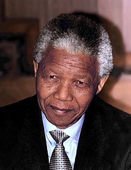

Tribute to Nelson Mandela
OMP SBG SBS CLS DMG MMS MMB

Here's a short history of His Excellency Nelson Mandela life:
Nelson Rolihlahla Mandela (18 July 1918 – 5 December 2013) was a South African anti-apartheid activist and politician who served as the first president of South Africa from 1994 to 1999. He was the country's first black head of state and the first elected in a fully representative democratic election. His government focused on dismantling the legacy of apartheid by fostering racial reconciliation.
- Early Life 1918–1934: Mandela was born on 18 July 1918 in the village of Mvezo in Umtata, then part of South Africa's Cape Province. Given the forename Rolihlahla, a Xhosa term colloquially meaning "troublemaker", in later years he became known by his clan name, Madiba.
- Revolutionary activity, Law studies and the ANC Youth League 1943–1949: Mandela began studying law at the University of the Witwatersrand, where he was the only black African student and faced racism.
- Arrest & Imprisonment (Arrest and Rivonia trial 1962–1964) and His speech:On 5 August 1962, police captured Mandela along with fellow activist Cecil Williams near Howick. Many MK members suspected that the authorities had been tipped off with regard to Mandela's whereabouts, although Mandela himself gave these ideas little credence.
- Illness and death: 2011–2013:In February 2011, Mandela was briefly hospitalised with a respiratory infection, attracting international attention,before being re-admitted for a lung infection and gallstone removal in December 2012. After a successful medical procedure in early March 2013, his lung infection recurred and he was briefly hospitalised in Pretoria. In June 2013, his lung infection worsened and he was readmitted to a Pretoria hospital in serious condition. The Archbishop of Cape Town Thabo Makgoba visited Mandela at the hospital and prayed with Machel, while Zuma cancelled a trip to Mozambique to visit him the following day. In September 2013, Mandela was discharged from hospital,although his condition remained unstable.